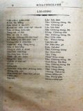
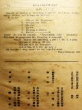

Languages
台文
｜
中文
｜
日本語
｜
English
字體
小
｜
中
｜
大
首頁
/
白話字數位典藏
白話字數位典藏全文檢索
查詢模式
選擇年代
清國時代(1885-1895)
日本時代(1895-1945)
戰後(1945-1969)
1885-1895
1896-1905
1906-1915
1916-1925
1926-1935
1936-1945
1946-1955
1956-1965
1966-1969
1970-1980
1980-1990
1990-2000
2000-2010
2010-
選擇文類
詩
散文
小說
戲劇
傳記
選擇作者
陳清忠
陳清義
編輯部
柯設偕
吳天命
明有德
偕叡廉
周天來
劉華義
王守勇
林茂生
陳添旺
王占魁
柯維思
賴仁聲
陳瓊琚
雪峰逸嵐
吳清鎰
郭水龍
蕭樂善
許水露
葉金木
陳金然
章王由
廖得
鄭連坤
楊士養
潘道榮
梁秀德
劉約翰
周淑慧
高金聲
林燕臣
黃六點
蔡愛義
許有才
主筆
巴克禮
陳鳩水
郭朝成
張基全
陳明清
陳能通
拾穗生
顏振聲
卓恆利
傳道局
胡文池
劉主安
鄭兒玉
大橋流太郎
潘勝輝
鐘天枝
潘金聲
Google Search
Yahoo Search
全部
刊名
標題
標題(教羅)
全文
全文(教羅)
作者
第3頁，共13頁(共246筆資料) 0.56851100921631sec
1
2
3
4
5
...
13
To Page
GO
文字列表
圖文列表
排序
日期
文類
刊名
作者
影像
[1924-6 台南府城教會報 文類-散文 作者-廖得/Liāu Tit]
腹肚內ê感化 [ Pak-tó͘-lāi ê Kám-hoà ]
腹肚內ê感化1924.06 471卷 p.10-11(Liāu Tit)現時唐山劉永祥會友，三歲ê 第8 後生：頭長，圓形；頷頸短koh 大；目珠大koh thò͘-thò͘;兩枝手骨短koh khiau；指頭仔3 枝，有薄膜相連；ka-chiah平koh 直；兩枝腳腿彎khiau，gâu 行走。 原因是囡仔ê 老母有身ê 時，去iah山芋，煞hō͘ 大隻水雞驚--著；無扑算腹肚內ê 囡仔煞變做水雞形：che 是胎教ê 大關係。所以父母ê 身體勇lám、智識ê 關係、人才ê suí bái、德行ê 好歹，以及境遇ê 喜、怒、哀、樂、愛、惡、慾；無論先天（boē生），後天（生了），攏大影響tī ...
[1916-1 台灣教會報 文類-傳記 作者-廖得/Liāu Tit]
李老王的小傳 [ Lí Lāu-ông ê Sió-toān ]
李老王的小傳。 (廖得記)。 1916.1 no.370 pp.9-10 李老王佇1848年佇大字崙田洋出世。長成的時搬去屬西螺的水尾莊徛起；彼時佇遐有一兩戶咧徛nā-tiāⁿ。後來那濟人搬去。到伊39歲的時，埔心莊阿連長老的小妹一家3人移去遐蹛；雖然是毋捌聖冊，也無伴通聚集；猶過暗時好膽吟詩祈禱佮主交陪。對按呢老王叔彼時猶未捌聽見人禮拜，所以就去覕咧偷聽，看in念甚物。忽然聽見in咧替彼莊的眾人祈禱求福氣；伊的心受感激就信主。 得著道理了，熱心致意守禮拜；雖是禮拜日早起無衫仔褲通換，無飯通食，無米通紮，因為彼時伊的婦人人猶未信主，又閣到茄苳仔拜堂倚欲2舖，路也真歹行；總是伊攏無驚...
[1925-7 芥菜子 文類-散文 作者-雪峰逸嵐/Soat-hong Iat-lâm]
(2)
論白賊 [ LŪN PE̍H-CHHA̍T ]
論白賊 前月鄙人有寫一篇故事佇囡仔新聞，後來一位ê朋友，笑笑問我講：恁教示囡仔，毋thang講白賊，你反轉家己講白賊，佇叼位捌看著玉珠會變色到親像土，koh beh爆裂。我聽了真趣味，續愛笑，koh 予我生起ài研究ê心；就佇零星ê時間常常想白賊是按怎。後來對這句話來想你教示囡仔毋thang講（真實ê）白賊，反轉家己講（假影ê）白賊。按呢我就想出 (1)真正ê白賊，(2) 假影ê白賊所以簡簡記幾句來談論。 1. 真正ê白賊：－ 就是，ài害人&ecir...
[1925-7 芥菜子 文類-散文 作者-大橋流太郎/Tāi-kiâu Liû-thài-lông]
(1)
祝發刊 [ CHIOK HOAT-KHAN ]
祝發刊 字kap文章就是上帝賞賜人特別ê恩典。親像對佇講話以及行踏，咱會得thang捌人ê款式；對佇文章咱猶原會。實在thang
[1925-10 芥菜子 文類-選擇文類 作者-編輯部/Phian-chip-pō͘͘]
(1)
投稿Ê注意 [ TÂU-KÓ Ê CHÙ-Ì ]
投稿Ê注意 1.字數 上濟1500字。2.字眼 請用khah淺白。3.字句 請寫分明。4.原稿 袂得thang寄還。5.原稿ê取捨，請予編輯部主意。 ...
[1925-10 芥菜子 文類-選擇文類 作者-編輯部/Phian-chip-pō͘͘]
(1)
募集第3號Ê原稿 [ BŌ͘-CHI̍P TĒ SAN HŌ Ê GOÂN-KÓ ]
募集第3號Ê原稿 期間-----11 月25號止。列位若有人ài投稿佇第3號ê芥菜子，請毋thang過限，量早寄來淡水交主筆陳清忠。 ...
[1925-10 芥菜子 文類-選擇文類 作者-編輯部/Phian-chip-pō͘͘]
(1)
芥菜子獻金報告 [ KOÀ-CHHÀI-CHÍ HIÀN-KIM PÒ-KÒ ]
芥菜子獻金報告（將這个報告來代理領收） 大稻埕 ￥ 62.00 淡水 ￥ 57.30 艋舺 ￥ 33.00 Sek-kháu ￥ 22.00 新竹 ￥ 22.00 鳳林 ￥ 19.00 雙連 ￥ 18.50 宜蘭 ...

[1925-10 芥菜子 文類-選擇文類 作者-編輯部/Phian-chip-pō͘͘]
(1)
內容 [ LĀI-IÔNG ]
內容 活命ê源頭 劉約翰 祈禱無停 陳清忠譯 論祈禱ê要緊 陳清義 基督徒著怎麼奮鬥 劉約翰 論死人koh活 陳清忠譯 當殺爾慾 康清塗 袂得赦ê罪 陳清忠譯 用信清氣心肝 蕭樂善 &...

[1925-7 芥菜子 文類-選擇文類 作者-編輯部/Phian-chip-pō͘͘]
(1)
緊來！！！ [ KÍN LÂI !!! ]
緊來！！！ 北部所希望ùi發行ê教會報已經得著thang相kap歡喜感謝天父。 Ài加添： 1. 進步捌聖經。2. 進步捌道理。3. 熱心。4. 信德。5. 人生ê趣味。6. 歡喜，..............................ê，請恁緊來注文「芥菜子」去看。的確會幫贊咱信仰ê生活。 本報一年欲發行4本（7, 10, 1, 4月）一本ê紙數50面。一本 ￥ 0.15（角半）一年份 ￥ 0.5（五角）ÀI注文ê人請恁寄前金 編輯部 啟------------...
[1925-7 芥菜子 文類-選擇文類 作者-編輯部/Phian-chip-pō͘͘]
(1)
投稿Ê注意 [ TÂU-KÓ Ê CHÙ-Ì ]
投稿Ê注意 1. 字數 上濟1500字2. 字眼請用khah淺白。3. 字句請寫分明。4. 原稿 袂得thang寄還。5. 原稿ê取捨 請予編輯部主意。 ...
[1925-7 芥菜子 文類-選擇文類 作者-編輯部/Phian-chip-pō͘͘]
(2)
募集第二號Ê原稿 [ BŌ͘-CHI̍P TĒ-JĪ HŌ Ê GOÂN-KÓ ]
募集第二號Ê原稿 期間-------8月25日止請寄對下面所記ê住所來。 ...
[1925-7 芥菜子 文類-選擇文類 作者-編輯部/Phian-chip-pō͘͘]
(1)
感謝 [ KÁM-SIĀ ]
感謝 得著濟濟位先生ê同情，無惜in ê時間來投稿；所以chiah會得照所預定時日發行創刊號，阮ài大大kā in說多謝。Koh再有濟濟位先生ê原稿，為著紙上ê都合袂得thang攏總出版，真失禮：ǹg望佇後號會得thang出。 芥菜子編輯部...
[1925-7 芥菜子 文類-選擇文類 作者-編輯部/Phian-chip-pō͘͘]
(1)
北部教會最近Ê消息 [ PAK-PŌ͘ KÀU-HOĒ CHOÈ-KŪN Ê SIAU-SIT ]
北部教會最近Ê消息 1. 淡水中學落成式。北部教會ê中學，對設到taⁿ，校舍是用舊時神學校。總是校舍年年ná狹，因為學生逐年khah加添。所以這pang有開十外萬銀起一間新ê，佇年頭已經完工。Taⁿ有定著佇6月29號頂晡9點鐘欲開落成式。論這間新校舍ê媠、次序、位置thang講是台灣第一。Ǹg望列位鬥鼓吹子弟來遮讀。2. 傳道總會對7月7號起10日久欲開北部傳教師講習會kap總會佇淡水中-學校。有請不止濟位ê sianⁿ（按：應為先生）來講演，其中台南神學校長巴博士第一濟點。3. 宜蘭教會獨立。林清廉牧師有受宜蘭教會聘...
[1925-10 芥菜子 文類-選擇文類 作者-編輯部/Phian-chip-pō͘͘]
(1)
封面 [ Hong-bīn ]
芥菜子 第2號 1925 年10月1號 「天國親像一粒芥菜子，人the̍h去掖佇伊ê園；這個是百項種子ê第一細；到伊大欉，是khah大攏總ê菜蔬，續成做樹，致到空中ê鳥來歇佇伊ê枝。」 馬太13章31節。 「咱若有信親像一粒芥菜子，恁就beh kā這个山講：對遮徙去遐，亦beh徙去，koh恁teh-beh無一項袂。」馬太17章20節。 北部台灣基督長老教會教會公報 ...
[1925-7 芥菜子 文類-選擇文類 作者-編輯部/Phian-chip-pō͘͘]
(1)
封面 [ Hong-bīn ]
芥菜子第1號 1925 年7月1號「天國親像一粒芥菜子，人the̍h去掖佇伊ê園；這個是百項種子的第一細；到伊大欉，是較大攏總的菜蔬，紲成做樹，致到空中的鳥來歇佇伊的枝。」馬太13章31節。「咱若有信親像一粒芥菜子，恁就欲共這个山講：對遮徙去遐，亦欲徙去，閣恁teh欲無一項袂。」馬太17章20節。 北部台灣基督長老教會教會公報...
[1925-7 芥菜子 文類-選擇文類 作者-編輯部/Phian-chip-pō͘͘]
(1)
內容 [ LĀI-IÔNG ]
內容 發刊辭 郭希信 2 祝發刊 大橋流太郎 3 芥菜子ê蔭影 鄭溪泮 3 芥菜子ê希望 陳清忠 4 力間（海龍王） 陳清忠 5 疼ê使徒 張金波 &l...
[1925-9 台南府城教會報 文類-散文 作者-編輯部/Phian-chip-pō͘͘]
新冊出版 [ Sin-chheh Chhut-pán ]
新冊出版1925.09 486卷 p.4十項管見這本是蔡培火先生新著ê冊，用羅馬字來印。將伊平時ài佮同胞談論，揀較重要ê十項。Hit中間攏分4、5條詳細ê目錄，來淺明hit ê理氣。句句都是tuì伊ê心內透露出--來，會thang叫醒咱ê精神。所講ê話是真pêⁿ-pāng ，所論ê事也是咱每日平常所做。內容充足，材料豐富。若讀著這本冊，無各樣親像當面受伊ê指教，實在是開啟智識，培養道德ê好冊--lah！這本冊已經印好teh佮，是四六版，160外面，66000外字。tī這月半beh發行；每本6角銀，郵費四chiam。若買上10本，郵費m̄免；亦學生聯合買30本以上，beh算減兩割。發行所是蔡培...
[1925-7 芥菜子 文類-散文 作者-潘勝輝/Phoaⁿ Sèng-hui]
(2)
阿非利加洲Ê老父 [ A-HUI-LĪ-KA-CHIU Ê LĀU-PĒ ]
阿非利加洲Ê老父 「勤勤做工敬畏上帝。」這句就是阿非利加ê老父大衛李閔斯頓（按：David Livingstone，現翻作李文斯頓）刣贏高貴ê戰鬥所擒稠不滅ê金銀。沐沐茫茫宇宙ê萬相，宛然看見無次序，總是無論行到叼位to會得thang看見上帝ê攝理。干但烏暗不靈ê人類眼中常常袂判斷真假。 東半求ê西爿有一個三角形ê大陸，kiám毋是阿非利加洲mah？當19世紀到20世紀，物質ê文明發達thang講到佇極點；亂用文化ê理氣重黃金、chio...
[1925-10 芥菜子 文類-散文 作者-鐘天枝/Chiong Thian-ki]
(3)
向學心 [ HIÒNG-HA̍K SiM ]
向學心 一般ê人怎樣會生起向學ê心肝，是因為時勢逼in著按呢。時勢逼人是若天氣，親像詩篇19章2節到4節所講日隔日講出聲，暝過暝報人知。In無聲也無話； in ê聲色聽袂見。伊ê聲音到thong世間。伊ê話傳到地ê盡頭。 天氣雖bóng無出聲，猶久會逼人著改衣服。所以熱天若到，毋免貼單廣告，人家己自然ài褪去綿裘，換熱衫；若毋換ê人就是。身軀的確有增差。今仔日時勢逼人著向學也是按呢，設使若無向學，就是伊ê思想kap時勢有大各樣。Kiám-chh&...
[1925-10 芥菜子 文類-散文 作者-潘金聲/Phoaⁿ Kim-seng]
(3)
讀報所感 [ THA̍K PÒ SÓ͘ KÁM ]
讀報所感 讀貴報「芥菜子」ê創刊號，內容豐富，koh有津津有奇；真受感激！ 中間讀著陳溪圳陳芳本兩位老先生ê文法袂免得真同情。二位先生為著教會對宗教教育這方面ê觀念真稀微koh幼稚，真正tū戽萬丈ê氣焰，無毋是欲予教會對宗教教育kap宣教ê機關有平等ê態度： 後來若果然得著當局諸位、牧師；傳道師及長執會友ê贊成實施，就毋若北部、南部ê教會也實在會加添大大ê幸福。咱ê宗教教育經營施設ê名稱就是號做主日學á是日曜學校；想彼个意思，攏無表...
第3頁，共13頁(共246筆資料)
1
2
3
4
5
...
13
To Page
GO
數位典藏國家型科技計劃
拓展台灣數位典藏計畫
版權所有 國立台灣師範大學 台灣文化及語言文學研究所©2008
10610 台北市和平東路一段162號│TEL 02-7734-5516│Fax 02-2358-2461
計劃簡介
典藏特色
執行架構
計畫典藏數位化流程
成員介紹
台灣白話字發展簡介
巴克禮牧師與《台灣教會公報》
廈門話字典-杜嘉德
白話字教學-打馬字
中國南方白話字發展
台灣基督教長老教會簡表
台灣基督教長老教會教會歷史委員會
《北部台灣基督長老教會教會ê歷史》
關於陳清忠
白話字文學：台灣文學的早春